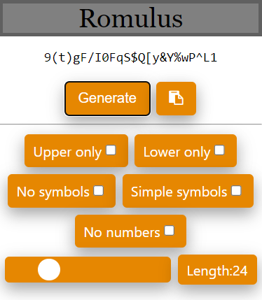

Romulus
Posted on 12/01/2025
Word count: 870
This project is named after the legendary Romulus, and it's icon is the silhouette of a wolf. Imagery surrounding Romulus often depicts him accompanied by a wolf as he and his twin brother Remus suckled on a she-wolf when they were infants. Later in life Romulus killed Remus before becoming the founder and first King of Rome.
Other than an incomplete keylogger written in Python, I had no other cyber security related projects under my belt. With a growing need to expand my portfolio I decided to change this and built myself a password generator. Specifically, this runs as a Chrome web extension and makes use of cryptographically strong randomly generated values.
The main functionalities behind this password generator is generating a range of random integers, converting them to ASCII and concatenating them together to form a string of a desired length. This would be the produced password. Further options were added later to allow the user to specify what kind of characters the password included.
Originally, I was using Javascript's math.random() method to return a set of pseudo-random numbers within a specific range. However, I then became aware of the crypto.getRandomValues() method which, unlike the previous method, produces cryptographically secure random numbers, which is much more desirable for my password generator. Although this does not produce truly random numbers, it is a pseudo-random number generator seeded with a value with enough entropy to make the returning values cryptographically secure.
Construction of the initial password generator didn't take long so I added in extra functionality to allow the user to include/exclude certain sets of characters from the password. These options are:
- All letters uppercase
- All letters lowercase
- No numbers
- No symbols
- Simplified set of symbols
The length of the password is also customisable, ranging from 1 to 100 characters, but the default length is 16 characters which, according to CISA, is the minimum length needed for a password to be considered strong.
Romulus extension
Example generations (16 characters):
- Standard generation cT6qV`IkO*i{WiU?
- Uppercase only mode 6.W2;4T9M4Q[R2_U
- Lowercase only mode ^p0p[5n(7q5}q_w)
- No numbers mode *RqPq/z!S.qV:i?o
- No symbols mode Bl6QfE6hYmHfEv0W
- Simplified symbols mode T:9Y6FmE%7Ns=IqM
It is also possible to combine the modes together. For example, here is a generated password with the uppercase only, no numbers, and simplified symbols modes all selected: Z=Q:R!L#Z#P%N:R#
Considerations
It occurred to me that although special characters are urged to be used when creating strong passwords, some special characters are forbidden. A reason for this can be because these characters have particular functionalities that can affect the code behind whatever input field they are entered into. Especially if these inputs are not properly sanitised which is done to protect against certain XSS attacks. These characters can be backticks, double speech marks, angle brackets, hashtags, slashes etc. The Gibson Research Corporation has a simplified passcode character set option in their Perfect Paper Passwords one time password system that I used when choosing which symbols should be included in my simplified symbols option as all of these symbols were generally inoffensive (! # % + : = ? @).
Every generated number needs to be checked to make sure it falls within a certain range before being converted to ASCII to make sure that only the letters a-z and A-Z, the numbers 0-9, and the symbols found on English/American keyboards can be chosen for the password. If this number falls out of bounds then it is discarded and the next number is considered. But since the simplified symbols set that I discussed above is so small (only 8 characters), it is possible for none of these characters to be picked when this mode is selected, especially when the password length is short. To get around this, a check is made when this mode is selected that examines the produced string for symbols and if none are found then the last character is replaced by a symbol. This final symbol is chosen from a set of symbols using the math.random() method. Although this method does not produce the same level of pseudo-randomness as the crypto.getRandomValues() method, the cryptographic strength of the password is not negatively affected by this as every other character in the password is still generated through the latter method, maintaining strong pseudo-randomness.
Future Additions
The NCSC recommends creating passwords with three memorable words in order to make them difficult to crack whilst still being easier to recall than a completely random set of characters.
The option to generate a password that is made from three common words would be a good addition to this password generator. Having both options of a completely random password and a more memorable one is a favourable addition as the first can be inputted straight into a password manager on generation, and the latter one would be used when more frequent recall is required.